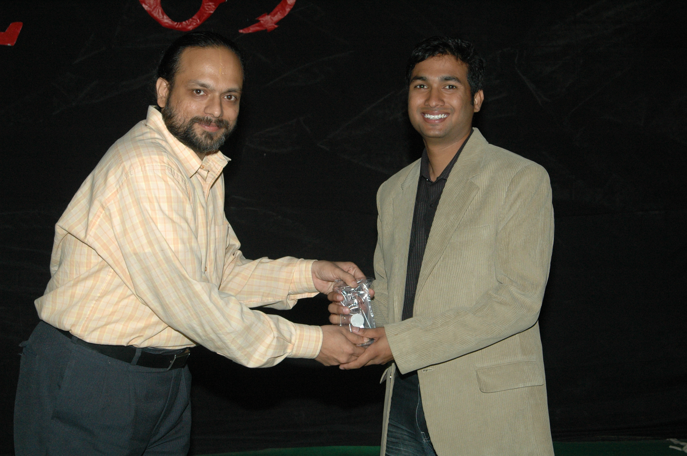

The Yearbook - Commemorating 2005-09!
Rishi Gupta's profile information
Name - Rishi GuptaBirthday - 8th Sept
Email - coolrishi2005@gmail.com
Address - Ajmer
Phone - 0145-2601020
Webpage - Link
Hobbies - Playing Cricket, Watching Movies
WishList - Joining Date from Motorola :)
Memorabilia - Success of Felicity '08 and Inter Batch Cricket Championsip Final '08
What would you want to be remembered as - A person who is capable of doing anything
Future Plans - MBA
Testimonials written to Rishi Gupta
Rishi Gupta's Album

Memorandum

Candle Ceremony

On the Farewell Night
Testimonials
For KaranKaran Maaro...aka Maadu, the inspiration of lot of people. He's smart, dashing, optimist, hard-working, intelligent, extremely cool, BCbaaz and is very close to each of us.
He was one of our Felicity Coordinator, and it was due to him we had the best felicity ever in our campus. The way he managed entire fest was amazing. We had a lot of setbacks during felicity, but he didn't give up. Hats-off to your dedication Karan

Studies mein bhi bande ka koi saani nahi...bahut phodu hai. I still remember during Jawahar Sir's assignment he was the one of not many to finish them very early. Final year mein thoda casual ho gaya studies ko lekar, but still manages to get nice grades
 Maintaining a nice CGPA.
Maintaining a nice CGPA.
I also admire him a lot for his in-depth knowledge and uncomparable General Knowledge
Whatever is the topic, he has a lot of arguments regarding it. A very good orator too. He has won various prizes in debates This paid him during his IIM-I interview, jo isne phod diya. Reading his interview, everyone was sure that he'll be selected....and truly so. U can refer
http://karanatiiit.wordpress.com/2009/02/
During placement, I still remember the amount of preparation he had done was really appreciable. I pray to God, ki Maroo ka jaldi se ho jaaye kisi company mein, because everyday he clears the written test...and many of us feel iska hoga uske baad hi hamara kuchh hoga

 He also gave me a lot of moral support during those tough times
He also gave me a lot of moral support during those tough times 
He is also an integral part of our cricket team, the strike bowler. Although came in picture late, but once he got a chance to play, proved himself. Mixes his pace really well and is always on target
Whenever we need a wicket, he is the one to get the breakthrough. We had nice memories of winning the Inter House and Inter Batch Tournaments. The Eat-Street outing with him is one I'll cherish lifetime  Forgot to mention, he is a big fan of Sachin. We also watched a lot of matches together
Forgot to mention, he is a big fan of Sachin. We also watched a lot of matches together
All the best Maroo for your future
For You
For Ankush Kalkote
Ankush Kalkote aka Maratha Warrior.....the ten pointer. Extremely hard working, intelligent, dedicated, down to earth, soft-spoken person. I didn't spend much time close to him, but still we had many outings together in the last 2 years.
He taught me TOC. I was really amazed by the way he built his concepts about anything and then helps other in understanding them
This was proved when he got an intern in Google and then a PPO. Apart from academics, he has no less knowledge than anyone else in IT, Business and various others sectors. I really admire him for that
Always keeps on smiling, makes everyone around him comfortable...he is a Gentleman. Always be the same dear...all the best..and stay in touch.
Take Care
For Abhishek Sainani
Sainani or Sainu or Scientist....a very cute little guy. Heard a lot about his PJ's in the 1st year, then knew him more when he came to NBH 3rd floor in 3rd year. He thinks a lot before saying anything and chooses appropriate fatta according to the situation. Hats-off to his never ending fattebaazi
Apart from this, he is a very hard-working person. In every semester, he takes the hardest of all the courses and still manages to get good grades
Never makes anyone angry. Very helping in nature. Many times he gave me medicines whenever I got ill
He has a passion for trying out new things, playing sports etc
He also suggested to me a lot of good hollywood movies. I enjoyed a lot working him during the SE presentation. He is an extremely talented actor too
All the best Sainu for your future. Hope you'll complete your MS soon. Take Care and be in touch.
For Abhijeet Pagare
Pagare aka Pappu.....a typical Bhopali. He is handsome, dashing, popular, smart and of-course a lovely friend.
We became friends while playing cricket for our house. He is the best bowler :^)^ :^)^ I have played with (fortunate enough to be in his team both in inter-house and inter-batch)
 But actually, I am a big fan of his batting too. He is one of the most technically correct batsman in our college
But actually, I am a big fan of his batting too. He is one of the most technically correct batsman in our college  Also the way he handled the captaincy of our team proves his leadership skills.....extremely good. I can never forget the Eat-Street outing of our batch cricket team.....loads of fun
Also the way he handled the captaincy of our team proves his leadership skills.....extremely good. I can never forget the Eat-Street outing of our batch cricket team.....loads of fun
He is an awesome dancer and an ultimate BC-baaz. With his sense of humour along with quick-wittiness makes everybody laughs all the time
 Although iske saath itni BC nahi kari hai, but I still remember our placement time, when we console each other until he got placed
Although iske saath itni BC nahi kari hai, but I still remember our placement time, when we console each other until he got placed
Placement se yaad aaya, we had an awesome day with our placement head, when both of us were out of our minds and were laughing on his face although Jayadev was scolding us
 Finally both of us were placed on consecutive days and were extremely happy
Finally both of us were placed on consecutive days and were extremely happy
When it comes to studies, he is baba. Extremely phodu and quick learner. Hats-off to his efforts which he put in while preparing for the placements
Maths mein bhi bahut tez hai.
Also very good at organizing and managing events. One of the person having major hand in makinf our felicity successful. He took the responsibility of the entire cultural part
All the best pappu for your future with tinki I'll miss you a lot whenever I'll play cricket.
For Kapil Bajaj
contd...
We'll have fun.....TC
You Rock
For Kapil Bajaj
Kapil Bajaj or KBC, bajju is one of the most hard-working guy in our batch. Dashing looks, (although apna katwaata rehta hai, but) apne around sabko hasaata rehta hai. Awesome PJ's maarta hai. Ultimate BC'baaz hai. Koi na koi gaana gaata rehta hai hamesha, generally puraane
I really appreciate him a lot for this. Never bores you, koi na koi topic pe bolta hi rehta hai
I came closer to him after coming to OBH...us se pehle bas iske chu****pe ke kisse bas sune hi the. Then we had lots of outings together and I found that why others call him KBC. Banda smart dikhta hai aur jahaan bhi jaata hai ladkiyon par impression banaane ke koshish karta hai
He was desperate to go into a big company, and for that, isne din raat ek kar diye, really worked extremely hard for placements
Hardly there was any concept or ques that he do not know. He has helped me a lot during placements, told me which material to read, important questions, also gave his notes. Also gave me a lot of moral support then. One thing I am sure of is, kisi ne bhi bajju se better notes nahi banaaye honge C++ concepts ke
A very good athlete and basketball player. Very competitive in nature, he is a bit egoistic too when it comes to his favourite sport. But that's only on the court. Plays with the full spirit of the game and gives his best
Thoda sa bas tension mein jaldi aa jaata hai, aur khud ke baare mein negative sochne lagta hai.
He is a die-hard fan of sitcoms and hollywood movies. Biggest competitor of bhai. Hamesha, kisi na kisi serial ki story sunata rehta hai. He has a rare gift of story telling, jo hamesha tumhe baandhe rakhti hai. Never makes you feel bore
He has seen almost all the stuff present on DC, jab bhi room se nikalta hai, aisa lagta hai new year mana ke aa raha hai

He has crush on 2-3 girls in our college
and has a unique way of describing them (sorry, but cannot expand on it here) Hope you will rock in Amazon, with awesome (32lac + 2) package. We'll have fFor Rahul Tenany
Rahul aka Raul or T.Rahul, a branded guy. He likes to wear branded clothes and collect expensive accessories
 Shopping karne jaata hai jab 4000 ke 3 kapde(sirf) laata hai, wo bhi after some discount
Shopping karne jaata hai jab 4000 ke 3 kapde(sirf) laata hai, wo bhi after some discount
One of the most sincere student in our batch. Very good in acads. Whichever course he takes, goes regularly to class, listens to the professor, asks doubts(if any), do revision at room, reads from the book
......awesome. During exams he teaches courses to his friends (only), though sometimes he gets less marks than them in the midsems. But, still thanks a lot Rahul, you taught me a lot of courses.
He is very much health conscious. When he came to college, he was overweight, but now he has reduced it a lot. Try to look slimmer
But still, kudos to his dedication towards jogging, goes till HCU main gate daily. Though he is athletic, but not good in any sport bachpan se padhta hi raha hai
Likes to hang around with friends, have fun, fond of photo sessions with a genuine smile
Very much hygene concerned, when it comes to eatables. Kabhi college canteen mein nahi khaaya hoga isne, not even juice. Har cheez khareedne se pehle, expiry date jaroor check karta hai.....be it a cold-drink.
Don't like doing BC. He has a very limited friend circle, but can do anything for his friends. Gupta ke liye PT jaane ko bhi ready ho gaya tha
Browsing ka bhi bahut shauk hai, ladkiyon ki profile visit karke, unki photos dwnld kar leta hai(pata nahi kya karta hai unka)
A very responsible person too, koi bhi kaam de do ise, do it to the fullest and in the best possible way
A big fan of Microsoft and Salman Khan, aaj tak nahi maanta ki Jaaneman was a flop show. Ready to watch it again Hoping that you'll be placed in Microsoft soon
A sincere request to all the readers, kabhi iska bura mat karna, not even sochna, kabhi is se paise udhaar mat lena. You will regret it for your lifetime
All the best Rahul for your future, be in touch.
Take Ca
For Kiran Danduprolu
Dandu, Gargoyle aka Pegasus, I know him sence he did the role of PTI ( hip rotation) during our freshers
He is a pro when it comes to computer games. Extremely good in CZ I always prefer to be in his team I don't think anyone in our plays more games than him.
Very friendly in nature, always ready to help you (if he is not sleeping, else he'll neither open the door, nor pick up your call)
The only South Indian in our group, he is extremely enthusiastic about playing. We have seen lots of movies, stuff and played many games in 1st year in his room, since only he has got a desktop. He never said NO.
He has seen a lot of Hollywood movies and is having a huge database of movies in his mind. Knows IMDB rating of almost every movie
Once, we were playing DumbC, one of our friend(who was acting) just gave hint that it is a 6 lettered english movie...Instanly Dandu said "One Flew Over The Cuckoo's Nest", and guess wht, it was correct. We all were like
Always ready to go to Coffee Shop, or any place outside to eat...and gets the highest bill among all of us. The only thing I don;t like about him is, he rarely takes bath. Isliye holi bhi nahi khelta
He is a very good programmer too and has a vast knowledge about computer and its peripherals. All the best Dandu for your future. Hope you will be placed soon. Be in touch.
For Veer Deora
V4Veer, the very first person whom I met when I joined here. Doing MS here, no one knows college se kab niklega. But, I really liked his decision to complete his MS under K.Shrinathan Sir. Pls jab bhi teri MS presentation ho, mujhe jaroor bulana.
We have been together since first years. We were among the first persons in our batch, who gave the ragging. He took me to the gym, and within a mintue we found ourselves surrounded by the seniors. I still remember the way, isne seniors ka ragging mein kaata tha. He made them extremely senti by saying that he belongs to a village and is very poor. He has never seen a TV. I was really laughing on the seniors that time, bechaare.
We had lots of outings during first two years, then (I still don't know the reason) he suddenly stopped talking, go outside with us.
 But since we are in Batch Cricket team, I am always in touch with him.
But since we are in Batch Cricket team, I am always in touch with him.
The most dedicated person in sports I have seen in past 4 years
Koi bhi match ho, ya practice ho, hamesha field pe dikh jaata hai. He is a very good cricketer. A gifted batsman and a reasonably good bowler and fielder.
He helped me a lot in becoming a good fielder, gave me a dozen of catches.
Plays Chess very well too. Although I won the first of our 2 encounters, but since than he has won lots of them
But ek baar Inter House mein ek fachche se haar gaya tha, khoob gaali diya tha tab main isko
Apart from this, he is an active orgaiser. He worked a lot on the Equity Pulse during Felicity'08. ALso organised various cricket tounaments during carnival. IPL was a big hit.
Most of the times, he is seen with juniors. He is like an idol for them. I appreciate his bold nature to speak whatever he feels and to stand on his point.
All the best Veer fro your future. Ab jaldi se apni MS complete kar le. We'll have fun in hyderabad. Take Care.
For Deepak Vig
Deepak Vig or Viglu Vodafone
or Bijlu aka Cracker....etc.etc, lots of names. He is one of the most solved person I have seen. He knows very well what to do and what not. Apart from this, he is humble, modest, very helping, extremely hard working, fast learner, good athlete.
I know him from Kota, both of us were in same coaching institute. He was very punctual to classes, so is here. Always completes the work within the deadline
He works within his limits, a bit shy according to me, but is more technically sound than anyone else . He has learnt lots of new technologies in no time and has completed various projects on them. Whatever the project is, one always wants to keep him in his team.
Apart from this, he is a very good athlete. Plays cricket and football very well. Cricket mein sweep shot ke liye famous hai, kyonki isko bas ek wohi shot khelna aata hai
Bowling to bilkul nahi aati , but a nice fielder.
We had lots of outing together, and one of it was unforgettable. We went to celebrate our Cache-in win, Viglu ne auto waale ko poore hyderabad ghuma diya(restaurant nahi mila) and we ended nowhere except spending 1000 bucks in travelling
Finally went to Pizza Hut and had fun.
Kudos to his friendly and extremely helping nature. Dharmeet ka fridge iske hi room pe pada rehta hai, kabhi bhi chale jaao, kuchh bhi khaa peeke aa jaao, always open. He never says NO to anyone, even if he is sleeping or busy with something else
All the best Viglu for your future. Be in touch. Hyderabad mein masti karenge
For Kapil Agrawal
Kapil aka Kaps or bada bhai is the most sophisticated banda of our batch. Based on the principle of Simple Living, High Thinking, he is Very Sincere, helping, apt (bahut kam bolta hai, jab bhi bolta hai sab ko chup kar deta hai
), always up-to-date with current affairs, dedication towards movies and sitcoms aalsi,
Although we were in Kota for three years, in same coaching institue, but we didn't know each other. During our initial interaction, we became good friends. Since then, we are very close to each other. The one thing which I appreciate the most about him, is his clearity in mind. He has so much confidende in him that he didn't even sit in placement
All the best dear for your future, and hope u do MBA from some top college.
Thanks for the delicious food, which u brought on the Nagpur Station.
For kharkwalg
Gaurav aka geekay, is pic mein jitna bhayaanak lag raha ahi, utna nahi hai. The most sincere student in our batch
, punctual, intelligent, hard-working, smart and handsome.
Whatever he do, gives his best and gets good results
CG bhi awesome hai. Hum exam se ek din pehle padhte hain, gaurav is always finished with the course till then, along with revision. Movies dekhta hai exam mein, to tease us.
Both of us got room on the same floor in NBH. When I met him first time, I found him a little arrogant( poor judgement)
and I also told Sambhav, he'll not be in our (so called) group for a long time. But, he has changed himself a lot since then Now he is more mature. We also went to his home several times and had great lunch (ghar ka khaana  )
)
Classes mein schedule time se 5 min pehle pahunch jaata hai (till date), listen to prof. with full concentration, doubts poochhta hai (kabhi-2 hum frusta jaate hain, koi ise chup karaao, taaki class jaldi khatm ho
), room pe revision karta ahi, assignments time se pehle hi submit kar deta hai. Hats-off to his dedication.
English speaking mein to jawaab hi nahi, chalti-firti dictionay hai
He is fond of english songs and movies. He also plays very good basket-ball. Cricket mein Umpiring bhi badhiya karta hai Overall a very good athlete.
I got a chance working with him during our ITWS project. He clearly divided the work among us and completed his part until I didn't even started mine. Although I did very less work, but got a good grade because of him. Thanks a lot.
All the best Gaurav for your higher studies and future.
For Sambhav Jain
There is only a small suggestion from me to you, don't be diplomatic every time, rest you know more.
All the best to you for your future. Jaldi si koi ladki pata le ;p, waise tu chennai jaa raha hai, nahi lagta ki koi chance hain but try karte rehna. And be in touch.
Take Care, Miss u a lot
For Sambhav Jain
Call him Sam or Mr. Jain or Tinka or Sambhav, he deserves a special testimonial. To be honest, he is one of my closest friend whom I consider as the most complete guy around me.
I know him since our JEE coaching, although we were not close friends then, but still I still remember he use to come to classes on a scooter, neatly dressed, tidy, smart looking, extremely sincere, punctual, confident
. Then we met again during our AIEEE councelling, he was explaining Shikha which college to take or reject , try to bachpan se hi kar raha hai, par abhi tak single hai Ek baar NTR garden mein bhi ek chinki ko propose kar diya tha josh josh mein, but kat gaya
College mein aane ke baad to ragging ke time saare bansalites jab ek saath chhupte rehte the, tab tinke se dosti hui. I was highly impressed by his nature. He is an all-rounder. Then we spent a lot of time together, enjoying, visiting new places in Hyderabad, Ramoji trip was awesome.
Taash ka silsila bhi tabhi se start ho gaya tha, mast khelta hai tinka. 29 mein to jawaab hi nahi, jo iski side hota hai (un)fortunately hamesha haarta hai
Uske baad jab house events hone lage, he was one of the leading performer, organiser. And every time he comes with something unique and interesting. Hats-off to his creativity
Padhaai mein to bande ka jawaab hi nahi
, dimaag bahut tez chalta hai. Aisa rehta hai, tinka jo course le raha hai, A pakka hai. Padhata bhi mast hai, bahut saare courses pass karaye hain isne.
BC karne raat raat tak laga rehta hai, aur sabse itna close hai ki, kahin bhi kisi bhi topic pe BC karta dikhaai de jaayega. During the second year we played lots of cricket and football together, awesome bowling karta hai, batting bhi theek kar leta hai.
Gaane mein iska jawaab nahi, I still remember he won a prize in singing during our Ramoji trip.
Hats-off dude, again to your allround character.
continued....
For Sachin
Sachin aka KK, is bindaas and one of the coolest
person around me. Bilkul bhi tension nahi leta, bas apne room mein pada rehta hai, movies or sitcome chalte rehte hain aur ye kuchh-2 karta rehta hai. Bahut hi aalsi hai.
I came in touch with him in the second year, felicty. We won the antakshri competition then. Bahut hi besura hai KK, but has a good database of songs. What makes him more hilarious is the way he talks, many a time, he is out of words and then makes you guessing what he intended to say.
He is an awesome programmer too, 1st year mein aisa lagta tha "kaun hai ye ch***ya jo apne aap ko hero samajhta hai", but when I knew him, he is really very helping and kind hearted person.
Class mein hum dono saath-2 hi baithte hain, bahut BC karte hain, kisi na kisi tarah time pass ho hi jaata hai. KK computer games bhi phodu khelta hai. In CS, he kills you lots of time having No Mercy. Cricket bhi theek khel leta hai, generally I keeps him in my team, beacuse I m highly impressed by his late cut on backfoot.
We had lots of night outs together playing cards. Somani ki saath milke bahut li hai 29 mein.
Another thing which I appreciate of him is that he is rarely double minded. Soch samajh ke sahi decision leta hai.
All the best KK for your future, Bangalore mein jaldi se koi ladki pata le, taaki aur masti kar sake
, aur hamein kabhi bhool na jaana
For Nitin Gupta
Nitin or Gupt(h)a is one of the tallest student in our batch, iska dil bhi bahut bada hai
(as said by t.rahul)
We are together since first year, and since both of us are from same state, we share common thoughts and interest. Nature se bahut hi bhola hai, hamesha khush rehta hai.
Dance to awesome karta hai ^
^ , "Aari aari" is one of his renowned performances along with "Aisa Jaadu". Cricket mein bhi jo match khelta hai wo hum jeet jaate hain, though he has little contribution Although he is not a good fielder, but took a sitter in the last match he played.
During placement he was placed before us, but gave me and bansi a lot of moral support
Felicity'08 mein bhi he was one of the main organiser.
Ladkiyon ke maamle mein kaafi lucky hai, train ho, bus ho ya riksha ho, saale ko koi na koi mil hi jaati hai, aur bhola sa gupta bekaabu hokar fisal hi jaata hai.
We have taken almost all the same courses during our B.Tech. aur classes mein khoob masti kari hai. Gupta kabhi classes mein nahi dhyaan deta, par time pass mast karta hai. Grades bhi badhiya aati hain
Some of our favourite memories are playing cricket on NBH 3rd floor and on BB Court, watching lots of movies together, batch trip, bird watching and commenting on them, and other outings in hyderabad.
All the best Gupta for future in IVY, hoping to be together in hyderabad and having loads of fun.
For Nitin
Nitin Bansal aka Bansi is one of the most quick witted person, I've come across with. He has a spl talent of cracking jokes at u now n den & has a strange but funny kind of sense of humor.
"...Appearence can be deceptive"..Yes he is the live example of it. What appeared to me in the 1st year, a studious person was actually a actually a fun loving guy. He has changed a lot since then, pehle bilkul dabbu dikhta tha, abhi rockstar ban gaya hai.
TV shows, movies dekhne ka ultimate chaska laga bansi ko college aane ke baad, but a small request, pls movies dekhte waqt so mat jaaya kar
. FIFA bhi awesome khelta hai.
Height of Frustaapa : Frist year mein jab kisi ke paas laptop nahi tha, tab dandu ke room mein Nitin* ne classes bunk maarke ultimate stuff dekha hai
Overall, a very nice and caring person to be with. We have spent ample time discussing all weird things frm fiction to gals, uncountable nightouts playing taash.....
share some common interets, mode of thinking, BTP, copmany....
He is an awesome pal, someone with whom u wud like to be friends with forever...All the best Bansi for your future, hope we'll get our joining letter soon
For Abhinav Parashar
Abhinav 'bhole to' Paro aka S..S..S..Saarukh
is a hard working guy. He is very dedicated and sincere towards his work. From the 1st sem till date, he is concerned about his studies, although CG itni achchhi nahi hai, but believe me he has more technical knowledge than anyone else. By nature he is a shy person, who knows himself well under his limitations.
Photos khichaane ka bhi bada shauk hai ise, always ready with a new pose.
A brief IncidentOnce, Gupta (of course, Nitin) has to give him 5 Rs., gupta nahi de raha tha. He took gupta's facewash, used it for 5 days and returned it back to him.
Still, a very friendly person indeed. All the best paro for your future. Hope you won't forget me

{kind=link}